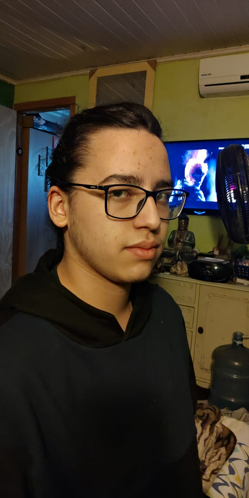
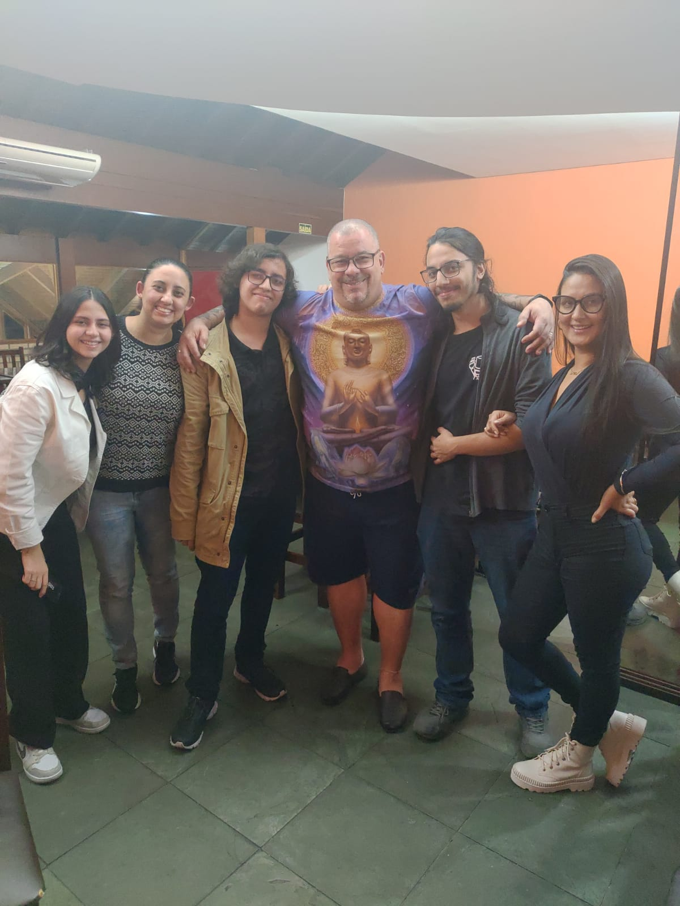
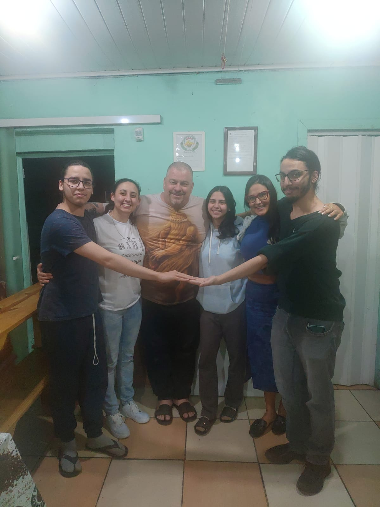
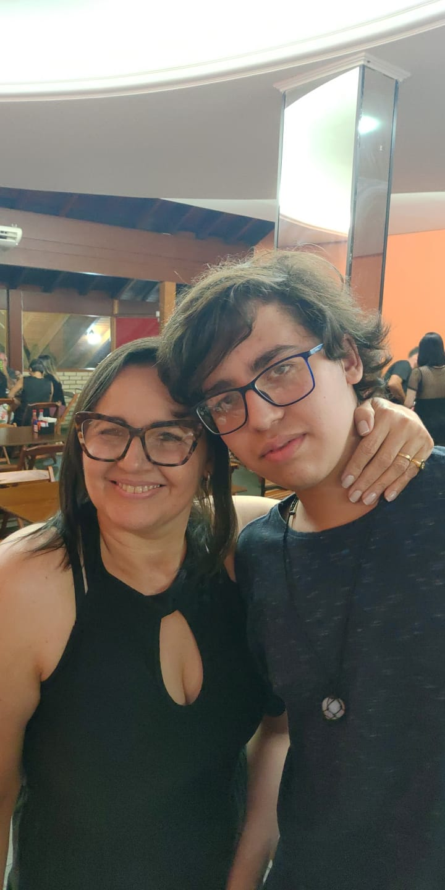
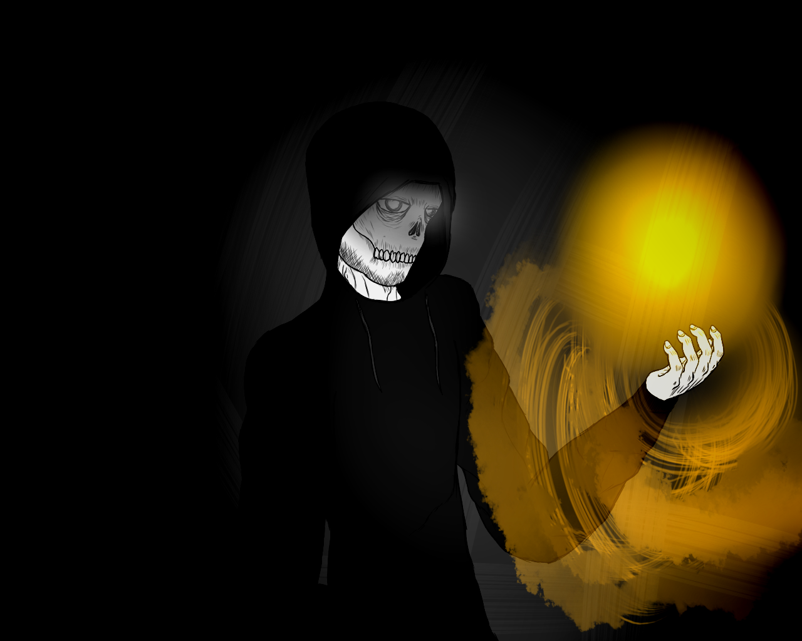
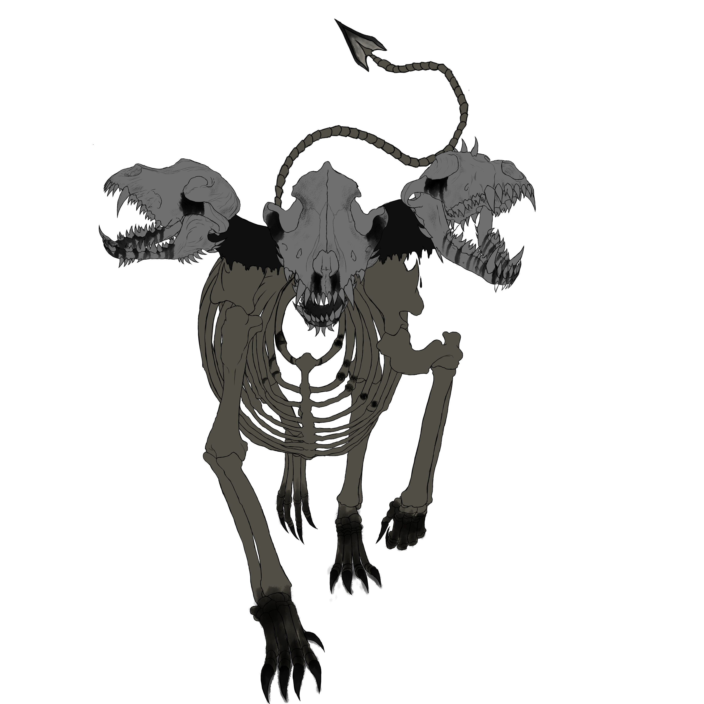
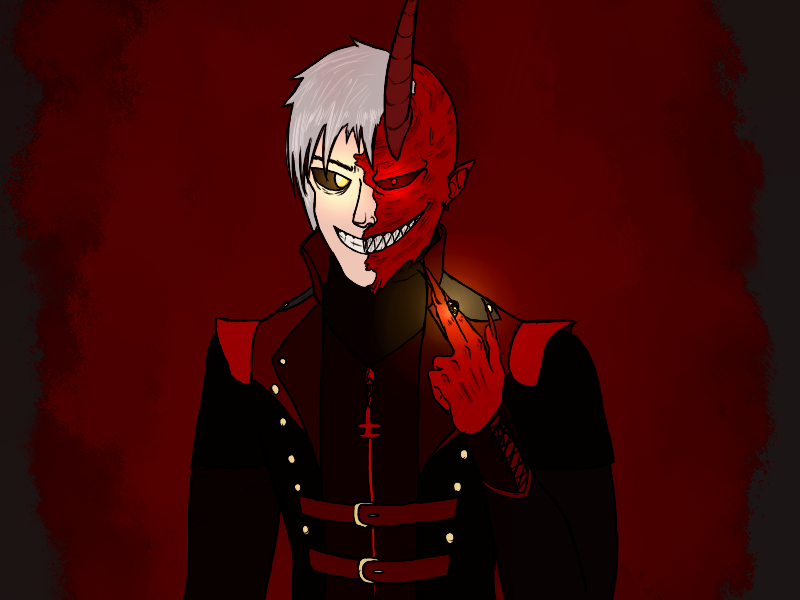
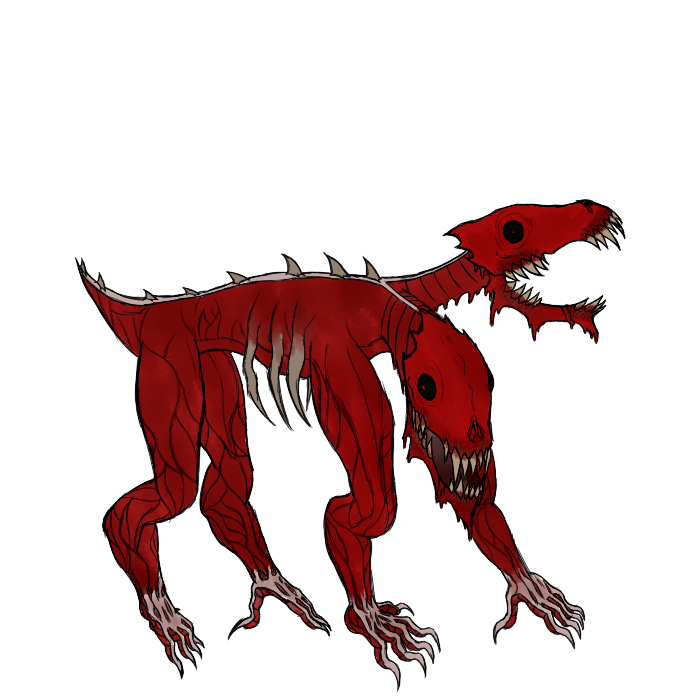

Olá! Seja bem vindo!
Eu fiz esse site para tentar me apresentar, dizer um pouco sobre o que eu gosto e não gosto e etc. Espero que não seja incomodo
Apresentação rapida
Eu me chamo Luiz Miguel Ernest Duarte, tenho 17 anos e moro em Porto Alegre desde que eu nasci. Há um tempo comecei a me interessar por programação e tive a sorte de ser chamado para esse curso, embora ainda apresente algumas dificuldades
(como foi para montar esse site) eu estou tentando aprender, espero conseguir dar o meu melhor aqui!
Coisas que eu gosto
Tem algumas coisas em especifico que eu gosto, então vou colocar as principais aqui
Respeito
Desenhar
RPG
Jogar
Dormir
Silêncio
Passar tempo com os meus amigos
Coisas que eu não gosto
Obviamente ninguém não tem algo que não goste e vou escrever algumas coisas que eu não gosto aqui
Desrespeito
Preconceito (racismo, homofobia, transfobia e etc)
Pessoas que se acham melhores que outras
Barulhos altos
Brigas desnecessárias
Considerações finais
Bom, é isso (eu acho), fiz esse site com carinho e espero que tenham gostado (mesmo que não tenha ficado tão bom) e que eu consiga melhorar futuramente.
Abraços
<3
Desenhos que eu fiz nas horas vagas



